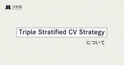

分析屋
https://note.com/bunsekiya_tech
★★ロゴが新しくなりました★★ 株式会社分析屋です。神奈川県で、データ分析の支援・代行を行っています。 今日のランチから企業の意思決定まで、 データ分析で最適解をご提供するために、蓄積したあらゆる面での技術をご紹介しております。 https://analytics-jp.com
フィード
【Tableau認定試験】Tableau Desktop Specialistとは？～合格までの道のり～
分析屋
分析屋の姫野です。少し前ですが、Tableauの認定試験であるTableau Desktop Specialistを受験し、合格いたしました。Tableauの認定資格とは何なのか？どういった試験内容なのか？勉強方法は？など。。。勉強を始めた時に困ったことをまとめていこうと思います。技術ブログを初めて執筆するので、あまり整っていない点は多めにみていただけると幸いです。続きをみる
1日前

Triple Stratified CV Strategyについて
分析屋
こんにちは、分析屋の中村です。kaggleのコンペティションのISIC2024にチーム参加し、そこで2位を取ることができました。このコンペはshakeが激しく、cv戦略がとても重要でした。続きをみる
2日前
Power Appsでアプリ作成にチャレンジ
分析屋
分析屋の竹原です。今回は、Power Platformの一つであるPower Appsについてご紹介いたします。現在、案件としてPower Appsを使用したアプリを作成する機会が増えてきました。ローコードでアプリを簡単に作成することができるので、ぜひチャレンジしてみてください。続きをみる
2日前
AI開発に使用されている言語紹介とその解説
分析屋
こんにちは、分析屋の池田です。今回は生成AI、AI全般に使用される言語はどんなものがあるのかをまとめました。記事内には言語についての解説だけではなく、具体的な利用例や習熟するまでにどの程度の時間を要するのかも記載してありますのでこれから学習を始めたいと考えている方にお勧めの記事です！続きをみる
3日前

SASのいろいろ8 -verifyを使用した文字変数の中の確認-
分析屋
W.Hです。今回はverifyを使用して文字変数の中の確認をします。文字変数の中が数字だけなのか確認したいときなどがありますが、SASには「変数名 isNUMERIC」のような確認方法がありません。そのため、「verify」を使用して数字かどうかの確認をします。続きをみる
20日前
【近未来】SoftBank World 2024を視聴して【すごい】
分析屋
こんにちは、分析屋の池田です。「AIって何の略？」って聞かれてもまともに答えらえない僕がこんな動画を視聴しました( ﾟдﾟ) 続きをみる
20日前
Power Automateで大量データをSharePointリストに一括登録する
分析屋
はじめに分析屋の渡邊です。Power Automateは、Microsoftが提供する業務自動化ツールで、プログラミングの知識がなくても、直感的な操作でワークフローを作成できるのが特徴です。一方、大量データを扱うには処理に長時間かかったり、アクション回数上限の制約にかかったりと扱いづらい面があります。とはいえ、業務環境上、PowerAutomateで数万件/日単位のデータをSharepointリスト上で扱わなければならない場面があります。そのような場合に、ODataの$batchクエリで効率よく処理することが可能ですので、その方法についてご紹介します。続きをみる
21日前
Excelのソルバー機能の使い方～使用方法～ (練習問題の回答）
分析屋
こんにちは！分析屋業務効率化チームのWです！現在は、皆様の業務効率化のお手伝いや、ExcelのVBAを用いたツール作成などを行っています。前回の自分noteでは、Excelのソルバー機能をオンにする方法と練習問題をご紹介しました。続きをみる
21日前
SASでFizzBuzzを実装してみた
分析屋
分析屋の藤島です。普段、解析用データセットの作成や帳票作成でSASを用いることが多いのですが、SASを用いてプログラミングを楽しむ（？）ということはやったことないです。続きをみる
22日前
◯aaSについてまとめてみた
分析屋
分析屋の藤島です。近年、IT技術の進化に伴い、「〇aaS（〇 as a Service）」という言葉をよく耳にするようになりました。この「〇aaS」は、「〇をサービスとして提供する」という考え方を指し、さまざまな形で私たちの生活や仕事に関わっています。私自身、恥ずかしながらいまいち区別がつかないので簡単にまとめてみました。続きをみる
22日前
【我流】Googleスプレッドシートで始めるコンテンツSEOのKPI管理入門
分析屋
こんにちは、マーケティング部のSです。普段はデジタルマーケティング案件でさまざまな施策を行なっています。コンテンツSEOを始めたばかりの企業が直面する最大の課題は「何をどう管理すればいいのか分からない」ということではないでしょうか？そんな私は、前職ではデジタルマーケティングはおろか、その場で調べて実践する業務環境だったので、「何？」を調べるのが得意になりました...続きをみる
23日前
SASのいろいろ6
分析屋
今回は小数点以下の桁数の調整についてです。表示桁の小数点以下〇桁を四捨五入して、小数点以下△桁まで表示というものがよくあるのですが、桁数を加工するのは少し面倒なのでここに残しておきます。続きをみる
23日前
データの一生、【データライフサイクル】について
分析屋
こんにちは、分析屋の池田です普段私はいわゆる”データアナリスト”の立場として業務をしています。しかしふと先日、「データアナリストとは何か？」と思い返す機会があり現在学び直しをおこなっています。そこで再確認、再認識できた知見をちょこちょこ記事にしたいと思います。続きをみる
24日前
統計解析業務について
分析屋
分析屋の藤島です。医療系データについて扱ってみたいという方を見かけます。また近年レセプトデータや健診データの解析や分析も注目されていると思いますので、実体験をベースに統計解析業務について紹介したいと思います。続きをみる
24日前
認定データアナリストの資格要件チェックしてみた
分析屋
分析屋の藤島です。英国王立統計学会認定の認定データアナリストの取得要件を満たしているかどうか確認してみました。実際に私が確認したサイトのURLもブログ内に貼ったので、興味ある方はぜひやってみてください！続きをみる
1ヶ月前
SASユーザー総会2024で発表してきた
分析屋
分析屋の藤島です。今年の9/18（水）、9/19（木）の2日間で開催されたSASユーザー総会に参加して発表してきました。今年のSASユーザー総会全体の話や発表内容、反省等をまとめてみました。続きをみる
1ヶ月前
OJT研修の内容と24年新卒の私が学んだこと
分析屋
こんにちは、24年新卒の阿部です。今回は、私がOJT研修期間に入ってからの研修内容や学んだことについて書いていこうと思います。内定者や就活中の皆さんに、OJT研修の内容を理解することやOJT研修を通じて得られるもののイメージを持っていただく手助けができれば幸いです。続きをみる
2ヶ月前
Excelのソルバー機能の使い方～導入編～（練習問題）
分析屋
こんにちは！分析屋業務効率化チームのWです！現在は、皆様の業務効率化のお手伝いや、ExcelのVBAを用いたツール作成などを行っています。皆様！Excelの機能として「ソルバー」というものがあるのをご存じでしょうか。ソルバーとは、数式の複数ある答えの中で、条件にあった最適な数値を導き出してくれる機能です。 このソルバーを用いることで、線形計画法の問題を簡単に解くことができます。また、Excelとしての身近な使用例としては、この機能とExcel関数を組み合わせることにより、Excelでシフトの自動作成も行うことができます！どうでしょうか、シフト作成にも使えると聞いて気になりませんか？ 今回は、そんなソルバーの基本的な使い方について説明するために、線形計画法の練習問題を用意いたしました。実際にソルバーを用いて練習を行っていきましょう！続きをみる
2ヶ月前
【統計検定DS発展のすゝめ】
分析屋
こちらの記事は分析屋マーケティング部内で展開されているコラムの再掲記事です。こんにちは。今回は私が「統計検定データサイエンス発展」（以下DS発展）という資格を8月に取得したので、個人的に感じた取得のメリットや学習方法について説明します。もし受験される場合はぜひ参考にしてみてください。 続きをみる
2ヶ月前
【就活生・内定者向け】新卒が半年の研修で学んだこと（BIダッシュボード編）
分析屋
こんにちは、24年新卒のTです。今回は、私が入社してから半年で経験したこと、学んだことをダッシュボードメインで書いていこうと思います。これを読んだ内定者の方・就活中の皆さんが、入社後の研修イメージや成長するイメージを持つ手助けができれば幸いです。その他にも分析屋の雰囲気なども伝えていければなと思います。続きをみる
2ヶ月前
P値5％以下であれば有意と判断していいの？
分析屋
はじめに分析屋の駆け出しDSサラリーマンです。今回初めて技術ブログを執筆します！業務は分析屋では珍しく、Lookerの運用保守やデータ形成をメインに扱っています。今回このテーマを扱った理由としては、大学で必修だったことと、前職でアンケート集計や広告効果測定で統計を使う機会が多々あり、現在も勉強を引き続き行っているのがきっかけです。統計について勉強内容を上長に相談したところ、有意水準について教えてもらい興味深く思ったため学んだ内容をまとめてみました。続きをみる
2ヶ月前